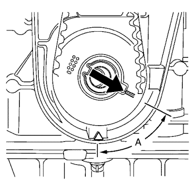
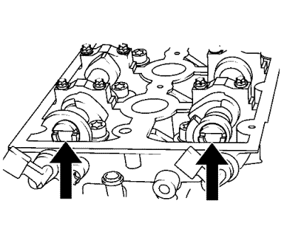
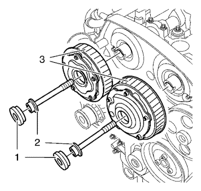

Sustitución del regulador del actuador de posición del árbol de levas
Herramientas especiales
| • | EN-6340 Herramienta de bloqueo del regulador del árbol de levas |
| • | EN-6628-A Herramienta de bloqueo del árbol de levas |
| • | EN-45059 Medidor de ángulos |
Si desea informarse sobre herramientas regionales equivalentes, consultar Herramientas especiales .
Procedimiento de desmontaje
- Abra el capó.
- Extraiga la carcasa del purificador de aire. Consultar Sustitución del filtro de aire → LDE, LXV, LUW, 2H0 .
- Desmontar la tapa del árbol de levas. Consultar Sustitución de la tapa de los árboles de levas → 1.6L LDE, LXV, 1.8L 2H0 y LUW .
- Retire el dispositivo tensor de la correa de accionamiento. Consultar Sustitución del dispositivo tensor de la correa de accionamiento .
- Retire la correa dentada. Consultar Sustitución de la correa de distribución → 1.6L LDE, LXV, 1.8L 2H0 y LUW .
- Desmonte la polea loca de la correa de distribución. Consultar Desmontaje de la polea loca de la correa de distribución .

- Ajuste el cigüeñal en el sentido de giro del motor a 60° (a) antes del TDC. Utilice el perno del compensador del cigüeñal y el indicador EN-45059.
- Desmonte el piñón del cigüeñal. Consultar Desmontaje de piñón de cigüeñal .
- Bajar el vehículo.
- Desmonte el soporte de montaje del motor. Consultar Sustitución del soporte de montaje del motor .
- Retire por dos sitios la cubierta central de la correa de distribución frontal de la cubierta de la correa de distribución trasera.
- Retire la cubierta central de la correa de distribución frontal (1).

- Quite el tornillo del tensor (1).
- Desmonte el tensor de la correa dentada (2).

Nota: Observe las flechas.
- Gire el árbol de levas por el hexágono hasta que la ranura del extremo de los árboles de levas quede horizontal.

- Monte la herramienta de bloqueo EN-6628-A (1).
- Elevar el vehículo y soportarlo de manera segura. Consultar Elevación y soporte en alto del vehículo .
Nota: Saldrá un poco de aceite de motor del árbol de levas y del aparato de ajuste del actuador de posición del árbol de levas. Por esta razón, deberá retirarse todo el conjunto de calado de la distribución.
- Coloque un recipiente de recogida debajo del vehículo.

- Desmonte el tornillo de cierre (1) del regulador del actuador de posición del árbol de levas de admisión y del de escape (3).
- Desmonte y DESECHE el tornillo del regulador del actuador de posición del árbol de levas de admisión y el tornillo del regulador del actuador de posición del árbol de levas de escape (2).
Nota: Es necesaria una segunda persona. Sujételo contra el hexágono del árbol de levas correspondiente con una llave fija.
- Desmonte el regulador del actuador de posición del árbol de levas de admisión y el regulador del actuador de posición del árbol de levas de escape (3).
Procedimiento de montaje
Nota: Si la tapa está contaminada con aceite, debe limpiarla bien.
Nota: Es necesaria una segunda persona. Sujételo contra el hexágono del árbol de levas correspondiente con una llave fija.
- Monte el tornillo del regulador del actuador de posición del árbol de levas de admisión y el tornillo del regulador del actuador de posición del árbol de levas de escape (3).
- Monte un tornillo NUEVO del regulador del actuador de posición del árbol de levas de admisión y un tornillo NUEVO del regulador del actuador de posición del árbol de levas de escape (2).

- Monte la herramienta de bloqueo EN-6340 en los reguladores del actuador de posición del árbol de levas.
| | Nota: La marca de punto (4) en el regulador del actuador de posición del árbol de levas de admisión no coincide con la ranura de EN-6340-izquierda durante este proceso, sino que debe estar algo más arriba como se indica. |
| 3.1. | Monte la herramienta de bloqueo EN-6340-izquierda (1) en los reguladores del actuador de posición del árbol de levas, como se muestra. |
| | Nota: La marca de punto (3) en regulador del actuador de posición del árbol de levas de escape debe coincidir con la ranura de la herramienta de bloqueo EN-6340-derecha. |
| 3.2. | Monte la herramienta de bloqueo EN-6340-derecha (2) en los reguladores del actuador de posición del árbol de levas, como se muestra. |
Precaución:Consulte Precaución con las fijaciones en la sección Prólogo.
Precaución:Consulte Precaución de la fijación del par angular y estiramiento en la sección Prólogo.
Nota: Es necesaria una segunda persona. Sujete por el hexágono del árbol de levas.
- Apriete los tornillos del regulador del actuador de posición del árbol de levas de admisión o escape a 65 N·m (48 lib. pie) + 120° + 15° con el goniómetro EN-45059.
Nota: Monte un anillo de junta NUEVO.
- Monte el tornillo de cierre del árbol de levas y apriételo a 30 N·m (22 lib. pie).
- Desmonte la herramienta de bloqueo EN-6628-A.
- Limpie la rosca del dispositivo tensor de la correa de distribución.
- Monte el tensor de la correa de distribución (2) y apriete el NUEVO tornillo (1) del tensor de la correa de distribución a 20 N·m (15 lib. pie).
- Monte la tapa delantera (1) central de la correa de distribución en dos puntos de la tapa trasera de la correa.
- Monte el soporte de montaje del motor. Consultar Sustitución del soporte de montaje del motor .
- Elevar el vehículo
- Monte el piñón del cigüeñal. Consultar Montaje del piñón del cigüeñal .

- Ajuste el cigüeñal en el sentido de giro del motor al PMS. Utilice el perno del compensador del cigüeñal.
- Monte la polea loca de la correa de distribución. Consultar Montaje de la polea loca de la correa de distribución .
- Monte la correa de distribución. Consultar Sustitución de la correa de distribución → 1.6L LDE, LXV, 1.8L 2H0 y LUW .
- Monte el tensor de la correa de accionamiento. Consultar Sustitución del dispositivo tensor de la correa de accionamiento .
- Monte la tapa del árbol de levas. Consultar Sustitución de la tapa de los árboles de levas → 1.6L LDE, LXV, 1.8L 2H0 y LUW .
- Monte la carcasa del filtro de aire. Consultar Sustitución del filtro de aire → LDE, LXV, LUW, 2H0 .
- Cierre el capó.
| © Copyright Chevrolet. All rights reserved |